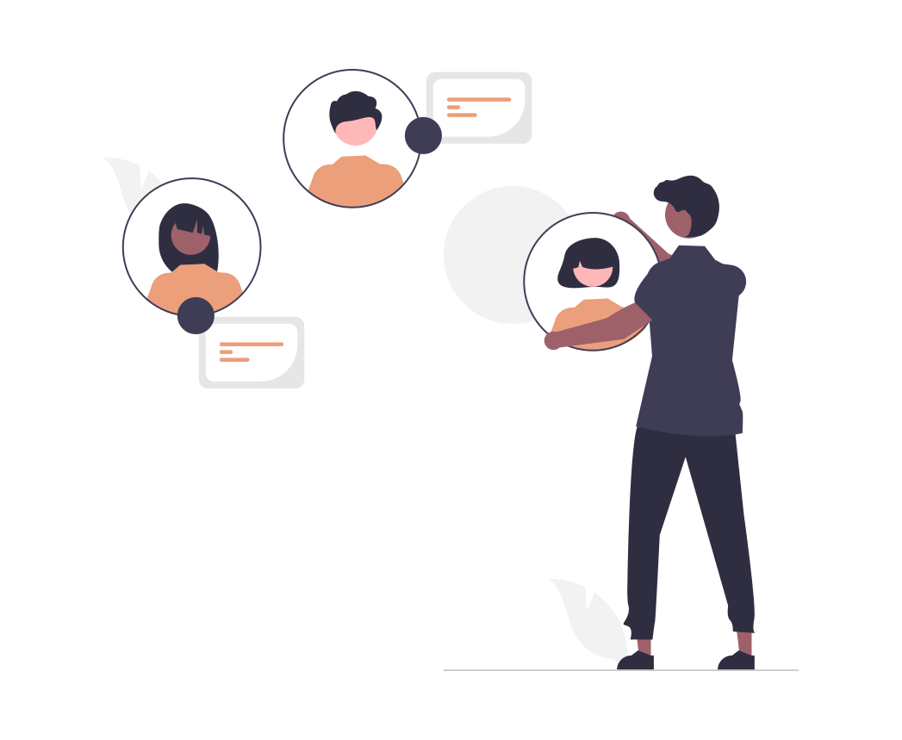
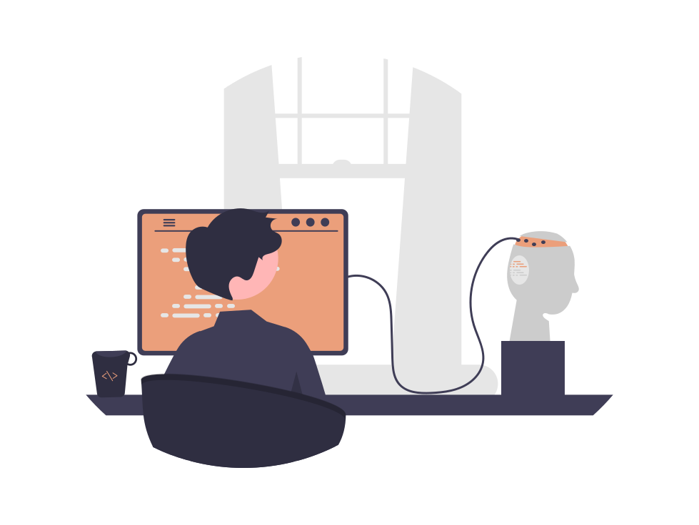

section 2/3: deep dive into social robot features
After playing with the interactive dot chart above, you might be wondering: what do all those different terms mean? Embodiment? Modalities? Fret not, we'll be explaining those below!

Target User Group: Social robots cater to diverse user groups, including children, the elderly, individuals with disabilities, and professionals in different industries, by addressing their specific needs and enhancing their lives.
Application Scenarios: Social robots are versatile and adaptable, as demonstrated by case studies and examples showcasing their use in various sectors such as healthcare, education, retail, hospitality, and home environments.

Levels of Autonomy: Autonomy in social robots varies from fully autonomous to remote-controlled systems, and is influenced by factors such as purpose, user group, and technological capabilities, with associated benefits and challenges impacting user experience and effectiveness. The ten levels of robot autonomy used in this website's visualisations have been adapted from the LORA framework.
Input & Output Modalities: Social robots use input modalities such as speech, touch, and gesture recognition to perceive and respond to human interactions, while output modalities such as speech synthesis, facial expressions, and body language allow them to communicate and interact with humans effectively.
modalities breakdown
Click on different parts of the interactive chart to learn more about the different channels of input and output modalities.